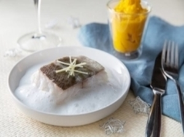
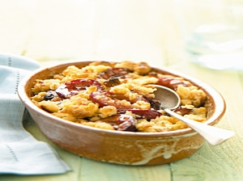
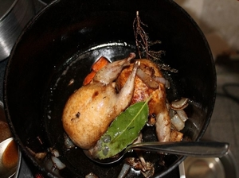
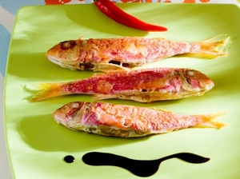
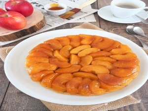

Accueil
Recettes
Menus
Contact
Recettes


Voir la recette foie gras
Voir la recette dos de cabillaud
Voir la recette du Crumbel



voir la recette caille rotie
Voir la recette rouget
Voir la recette de la tarte tatin